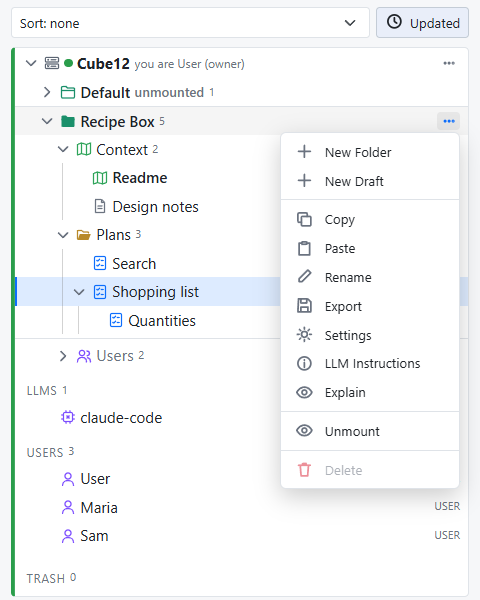
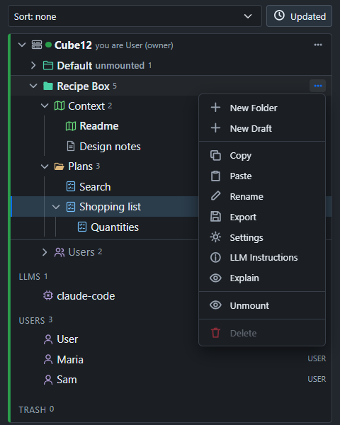

Consensus-AI
Consensus-AIThe Server
Consensus-AI comes as two applications. Consensus Desktop opens one project folder in one window, with the project's own server inside, the sidecar, for you and your agent on this machine; Getting started is about it. Consensus Server is the other: one server that holds a registry of projects and serves them to people, each signed in and each with a role, on this machine or on the network. It is everything the desktop is, plus the management of the machine's resources: the users, the LLM connections and tasks, the projects and their permissions. This page is the Server: how it starts, what it serves, who manages what on it, and how the desktop works with it. Sharing a server follows with the sign-in, the roles and the tokens.
Starting it
On Windows, run Consensus-Server-Setup-<version>.exe from the latest release; it puts Consensus Server in the Start menu. From the checkout:
npm run server
node bin/consensus-server.js [--open <folder>] [--config <folder>] [--port 3500] [--scope local|public] [--headless]
The Server reads the config folder (.consensus in your user folder, or the one --config names), listens as its Scope says, and serves every project its registry lists. Its window shows the Server's own page: every registered project as a tree of its own in the one sidebar, with the LLM connections, the Users fold and the Trash beneath them. One Server runs per machine: a second launch hands its arguments to the first and ends. Closing the window does not stop the Server: its icon in the tray brings the window back, shows the address, and its Quit ends the Server. While it runs it writes its address to <config>/~host.json, so the desktop on the same machine finds it.
--headless runs the Server with no window, which is what the Docker image and npm start do; consensus serve is the same for a plain node install. It prints where it is and whether it is open:
Consensus at http://127.0.0.1:3500/ (Scope Local, listening on 127.0.0.1)
closed: the Server waits for its first sign-in: a Personal or Professional license makes the Administrator; the page at http://127.0.0.1:3500/ signs in
config folder C:\Users\you\.consensus
settings from C:\Users\you\.consensus\consensus.json
project Recipe Box at C:\Users\you\projects\recipe-box (unmounted)
1 project is unmounted: accounts see mounted projects alone; the Administrator mounts a project in its menu on the Server's page
Server address in C:\Users\you\.consensus\~host.json
The first sign-in
A new Server is closed: it serves its page and the sign-in, and refuses everything else with the reason. The first person to sign in with a Personal or Professional license becomes its Administrator, and the Server opens. In the window, sign in from the page; a headless Server is opened from a browser at its address. When the environment variable CONSENSUS_ADMIN names an email, only that person can make the first sign-in, which keeps a Docker server on the network from being claimed by whoever reaches it first.
The Server runs under the Administrator's license: Personal lets it listen on this machine, Professional on the network too (Scope Public). Its later starts check the Administrator again: in the window, the person signed in on the machine; headless, the license the Administrator's last sign-in showed.
From then on the Server tells people apart by their sign-in, Local or Public alike: every request is a signed-in person, a token, or refused. See Sharing a server.
The registry and mounting
The Server's settings file, consensus.json, holds the registry: the project folders it knows, in display order, each with a Mounted switch.
A project registered on the Server, with New project or Add folder, starts unmounted: read and written by the Administrator and the Managers alone, marked "unmounted" in its row, and not there for anyone else, in the lists, the tree and the API. Mount in the project's menu opens it to the accounts that hold a role in it; Unmount takes it back without touching the roles.
Project settings… in a project's menu is for its Owners, the Administrator and the Managers: the project's Name, States, Include, Exclude and Commands, Git sync and Auto-commit, its LLM connection and the tasks it enables. It never holds the look: on a Server the look is the Server's, one for everyone, set in the Server's Settings by the Administrator and the Managers.


Open in Consensus Server, which the Server's installer adds to a folder's right-click menu in the file explorer (and --open <folder> on the command line), registers the folder as a project of the Server, or finds it when it is registered already, and shows it in the Server's window.
Who manages what
The users, the roles, the LLM connections and the tasks are managed on the Server's page, by the Administrator and the Managers, as Sharing a server and Working with an LLM describe: they make accounts and place anyone in a project's roles, define the connections and the tasks, and mount the projects; a project's Owners place people in its roles. Only the Administrator makes Managers. The LLM tasks always run on the Server.
The desktop and the Server
The desktop starts no Server: the Server is an application of its own. A desktop window reaches one in two ways, both needing a sign-in in the desktop (a free Registered account is enough):
- Connect to Server on the desktop's chooser: a name and the address, then Try. A Server answers that it asks for a sign-in, and Connect opens it in the window, where you sign in and see the projects you may; a saved entry with a project opens on it. The page works on the Server and writes nothing on your machine, and its tasks are the Server's.
- Open folder, or Open in Consensus Desktop, on a folder the Server's registry lists as mounted, while the Server runs, connects the window to the Server's project instead of opening the folder as a sidecar, so the Server stays the one writer of that folder. When the Server is not running the folder opens as a sidecar.
An agent session beside a Server project takes its token from the project's LLM Instructions, or, wired through MCP, from CONSENSUS_TOKEN: node bin/mcp.js --server http://<server>:<port> --service <your name>. The sidecar's fixed entry, consensus mcp <folder>, is the desktop's own; see Working with an LLM.